在 第 7 章 、锚点和反事实解释中，我们考察了公平性及其与决策的联系，但仅限于事后模型解释方法。在 第 10 章 中，特性选择和可解释性工程，我们提出了成本敏感性的话题，这通常与平衡或公平有关。在这一章中，我们将讨论平衡数据和调整模型以保证公平性的方法。
对于信用卡默认数据集，我们将了解如何利用目标可视化工具(如类平衡)来检测不需要的偏差，然后如何通过预处理方法(如重新加权和不同影响消除器)来减少偏差，并为后处理均衡赔率。从 第 7 章 、锚和反事实解释、第 10 章 、特征选择和可解释性工程的主题延伸，我们还将研究政策决策如何会产生意想不到的、违反直觉的或有害的影响。在假设检验的背景下，一个决策被称为处理。对于许多决策场景，评估它们的效果并确保这种评估是可靠的是至关重要的。
因此，我们将假设减少最弱势人群信用卡违约的治疗方法，并利用因果建模来确定其平均治疗效果 ( ATE )和条件平均治疗效果 ( CATE )。最后，我们确保使用各种方法测试因果假设和估计的稳健性。
这些是我们将要讨论的主要话题:
本章的示例使用了mldatasets、pandas、numpy、sklearn、lightgbm、xgboost、matplotlib、seaborn、xai、aif360、econml和dowhy库。关于如何安装所有这些库的说明在前言中。本章的代码位于以下位置:
全球流通的信用卡超过 28 亿张，每年合计消费超过 25 万亿美元(https://www . ft . com/content/ad 826 e 32-2ee 8-11e 9-ba00-0251022932 c8)。毫无疑问，这些都是天文数字，但是信用卡产业的规模不是由花费多少来衡量，而是由负债多少来衡量。银行等发卡机构的大部分资金来自利息。因此，消费者所欠的超过 60 万亿美元，其中信用卡债务是相当大的一部分，以利息的形式为贷方提供了稳定的收入。有人可能会说这对企业有利，但它也带来了巨大的风险，因为如果借款人在本金和运营成本得到偿还之前违约，贷款人可能会损失，特别是一旦他们用尽了法律途径来收回债务。
当出现信贷泡沫时，这个问题会变得更加复杂，因为当泡沫破裂时，不健康的债务水平会危及贷款人的财务，并拖垮他们的利益相关者。2008 年的房地产泡沫就是如此，也被称为次贷危机。这些泡沫通常始于对增长的投机，并寻求无条件的需求来推动增长。在抵押贷款危机的情况下，它向没有被证明有偿还能力的人提供抵押贷款。可悲的是，它还瞄准了少数群体，这些人在泡沫破裂后，他们的全部净资产化为乌有。金融危机和萧条，以及其间的每一场灾难，往往会以高得多的速度影响那些最脆弱的群体。
信用卡也卷入了灾难性的泡沫，特别是 2003 年的南韩(https://www . bis . org/repoffice publ/ARP research _ fs _ 200806.10 . pdf)和 2006 年的台湾。本章将检视导致台湾信用卡危机的 2005 年以来的数据。到 2006 年，超过 70 万人拖欠的信用卡债务达到 2680 亿美元。超过 3%的 T4 人甚至无法支付信用卡的最低余额，通俗地说，他们被称为“信用卡奴隶”。随之而来的是重大的社会后果，如无家可归、贩毒/吸毒，甚至自杀的急剧增加。1997 年亚洲金融危机之后，该地区的自杀率稳步上升。2005 年至 2006 年间，台湾的自杀率跃升至世界第二高(https://www.taiwannews.com.tw/en/news/358044)。
如果我们追溯危机的根源，那就是新的发卡银行耗尽了饱和的房地产市场，削减了获得信用卡的要求，而当时当局对信用卡的监管不力。年轻人受到的冲击最大，因为他们通常收入较低，理财经验也较少。2005 年，台湾金融监督管理委员会颁布新法规，提高信用卡申请人的要求，防止新的信用卡奴隶。然而，需要更多的政策来关注债务和已经存在于系统中的债务人。当局开始讨论建立资产管理公司，从银行的资产负债表中剔除坏账。他们还想通过一项债务人还款条例，为协商一个合理的还款计划提供一个框架。这两项政策直到 2006 年才被写入法律。
假设现在是 2005 年 8 月，你来自未来，拥有新颖的机器学习和因果推理方法。一家台湾银行希望创建一个分类模型来预测贷款违约的客户。他们为您提供了一个包含 30，000 名信用卡客户的数据集。监管机构仍在起草法律，因此有机会提出对银行和债务人都有利的政策。当法律通过后，他们可以使用分类模型来预测他们应该向 AMC 出售哪些债务，并使用因果模型来估计哪些政策将有利于其他客户和银行，但他们希望公平、稳健地完成这项工作，这是您的任务！
银行向你强调了在你的方法中嵌入公平的重要性，因为监管者和公众普遍希望得到银行不会造成更多伤害的保证。他们的声誉也取决于此，因为在过去的几个月里，媒体一直在无情地指责他们不诚实和掠夺性的贷款行为，导致消费者不信任他们。出于这个原因，他们希望使用最先进的稳健性测试来证明规定的政策将缓解问题。您提议的方法包括以下几点:
dowhy库拟合出一个因果模型，它将识别出因果。这些效应被因果模型进一步分解，以揭示异质性治疗效应。让我们开始吧！
您将在此处找到该示例的代码:
mldatasets加载数据集pandas和numpy来操纵它sklearn (scikit-learn)、xgboost、aif360和lightgbm分割数据并拟合模型matplotlib、seaborn和xai可视化解释econml和dowhy为因果推断您应该首先加载它们，如下所示:
import math
import os
import mldatasets
import pandas as pd
import numpy as np
from tqdm.notebook import tqdm
from sklearn import model_selection, tree
import lightgbm as lgb
import xgboost as xgb
from aif360.datasets import BinaryLabelDataset
from aif360.metrics import BinaryLabelDatasetMetric,\
ClassificationMetric
from aif360.algorithms.preprocessing import Reweighing,\
DisparateImpactRemover
from aif360.algorithms.inprocessing import PrejudiceRemover,\
GerryFairClassifier
from aif360.algorithms.postprocessing.\
calibrated_eq_odds_postprocessing import\
CalibratedEqOddsPostprocessing
from aif360.algorithms.postprocessing.eq_odds_postprocessing import EqOddsPostprocessing
from econml.dr import LinearDRLearner
import dowhy
from dowhy import CausalModel
import xai
from networkx.drawing.nx_pydot import to_pydot
from IPython.display import Image, display
import matplotlib.pyplot as plt
import seaborn as sns
我们像这样将数据加载到我们称为ccdefault_all_df的数据帧中:
ccdefault_all_df = mldatasets.load("cc-default", prepare=True)
应该有 30，000 条记录和 31 列。我们可以验证info()的情况，如下所示:
ccdefault_all_df.info()
上述代码输出以下内容:
<class 'pandas.core.frame.DataFrame'> Int64Index: 30000 entries, 1 to 30000 Data columns (total 31 columns): # Column Non-Null Count Dtype --- ------ -------------- ----- 0 CC_LIMIT_CAT 30000 non-null int8 1 EDUCATION 30000 non-null int8 2 MARITAL_STATUS 30000 non-null int8 3 GENDER 30000 non-null int8 4 AGE_GROUP 30000 non-null int8 5 pay_status_1 30000 non-null int8 6 pay_status_2 30000 non-null int8 7 pay_status_3 30000 non-null int8 8 pay_status_4 30000 non-null int8 9 pay_status_5 30000 non-null int8 10 pay_status_6 30000 non-null int8 11 paid_pct_1 30000 non-null float64 12 paid_pct_2 30000 non-null float64 13 paid_pct_3 30000 non-null float64 14 paid_pct_4 30000 non-null float64 15 paid_pct_5 30000 non-null float64 16 paid_pct_6 30000 non-null float64 17 bill1_over_limit 30000 non-null float64 18 IS_DEFAULT 30000 non-null int8 19 _AGE 30000 non-null int16 20 _spend 30000 non-null int32 21 _tpm 30000 non-null int16 22 _ppm 30000 non-null int16 23 _RETAIL 30000 non-null int8 24 _URBAN 30000 non-null int8 25 _RURAL 30000 non-null int8 26 _PREMIUM 30000 non-null int8 27 _TREATMENT 30000 non-null int8 28 _LTV 30000 non-null float64 29 _CC_LIMIT 30000 non-null int32 30 _risk_score 30000 non-null float64 dtypes: float64(9), int16(3), int32(2), int8(17) memory usage: 3.2 MB
输出检查完毕。所有特征都是数字，没有缺失值，因为我们使用了prepare=True。分类特征都是int8，因为它们已经被编码。
共有 30 个特征，但我们不会一起使用它们，因为其中的18 个用于偏差缓解练习，其余以下划线(_)开头的 12 个用于因果推理练习。很快，我们将把数据分割成每个练习对应的数据集。值得注意的是，小写特征与每个客户端的交易历史有关，而客户端帐户或目标特征是大写的。
我们将在偏差缓解练习中使用以下功能:
CC_LIMIT_CAT:序数；信用卡限额(_CC_LIMIT)分为八个或多或少平均分布的四分位数EDUCATION:标称；客户的教育程度(0:其他，1:高中，2:本科，3:研究生)MARITAL_STATUS:标称；客户的婚姻状况(0:其他，1:单身，2:已婚)GENDER:名义上；客户的性别(1:男性，2:女性)AGE GROUP:二进制；表示客户是否属于特权年龄组(1:特权(26-47 岁)，0:弱势(每隔一个年龄))pay_status_1 … pay_status_6:序数；从pay_status_6年 4 月至 2005 年 8 月pay_status_1 ( -1:按时还款、1:延期 1 个月、2:延期 2 个月……8:延期 8 个月、9 : 9 个月及以上)前六期的还款情况paid_pct_1……paid_pct_6:连续；从 2005 年paid_pct_64 月到 2005 年paid_pct_18 月，每月到期账单的支付百分比是多少bill1_over_limit:连续；2005 年 8 月最后一笔票据的比率超过了相应的信贷限额IS_DEFAULT:二进制；目标；客户是否违约这些是我们仅在因果推理练习中使用的特征:
_AGE:连续；客户的年龄(年)_spend:连续；每位顾客花了多少新台币_tpm:连续；客户在过去 6 个月中每月使用信用卡进行的交易的中位数_ppm:连续；客户在过去 6 个月中使用信用卡每月购物的中位数_RETAIL:二进制；如果客户是零售商，而不是通过其雇主获得的客户_URBAN:二进制；如果是城市客户_RURAL:二进制；如果是农村客户_PREMIUM:二进制；如果客户是“高级”客户。优质客户获得返现优惠和其他消费激励。_TREATMENT:标称；对每个客户规定的干预或政策(-1:不是实验的一部分，0:对照组，1:信用额度下限，2:付款计划，3:付款计划和信用额度)_LTV:连续；干预的结果，即给定前 6 个月的信用支付行为，以新台币估算的终身价值_CC_LIMIT:连续；客户在治疗前拥有的原始信用卡限额为新台币。银行家们预计，这一特征将极大地影响治疗的结果。_risk_score:连续；银行在 6 个月前根据信用卡账单超过其信用卡限额的比率为每个客户计算的风险分值。这就像bill1_over_limit除了它是 6 个月支付历史的加权平均值，并且它是在选择治疗之前 5 个月产生的。我们将在相应的章节中进一步解释因果推理的特性及其目的。同时，让我们用value_counts()按值分解_TREATMENT特征，以理解我们将如何分割该数据集，如下所示:
ccdefault_all_df._TREATMENT.value_counts()
上述代码输出以下内容:
-1 28904 3 274 2 274 1 274 0 274 Name: _TREATMENT, dtype: int64
大部分的观察都是治疗-1，所以它们不是因果推断的一部分。剩余部分在三个处理组(1 - 3)和对照组(0)之间平均分配。自然，我们将使用这四组进行因果推理练习。然而，由于对照组没有规定治疗，我们可以在和-1治疗的偏差缓解练习中使用它。我们必须小心地排除那些在偏见缓解活动中行为受到操纵的客户。关键在于预测在“一切照旧”的情况下哪些客户最有可能违约，同时试图减少偏差。
目前，我们唯一的数据准备步骤是分割数据集，这可以通过使用_TREATMENT列对pandas数据帧进行子集化来轻松完成。我们将用这个子集为每个练习创建一个数据框架:偏差减轻(ccdefault_bias_df)和因果推理(ccdefault_causal_df)。这些可以在下面的代码片段中看到:
ccdefault_bias_df =\
ccdefault_all_df[ccdefault_all_df._TREATMENT < 1]
ccdefault_causal_df =\
ccdefault_all_df[ccdefault_all_df._TREATMENT >= 0]
我们将在深入的章节中做一些其他的数据准备步骤，但是现在，我们可以开始了！
机器学习中的偏差有很多来源。如 第一章 、所概述的解释、可解释性和可说明性；为什么这些都很重要？，有充足的偏见来源。那些植根于数据所代表的真相的，比如导致数据中偏见的系统性和结构性的。也有源于数据本身的偏差，如样本、排除、关联和测量偏差。最后，我们从数据或模型中获得的见解存在偏差，我们必须小心，例如保守主义偏差、显著性偏差和基本归因错误。
对于这个例子，为了正确地理清这么多的偏差水平，我们应该将我们的数据与 2005 年台湾的人口普查数据和按人口统计划分的历史贷款数据联系起来。然后，使用这些外部数据集，控制信用卡合同条件，以及性别，收入和其他人口统计数据，以确定年轻人是否是他们不应该有资格获得的高息信用卡的目标。我们还需要追踪数据集到作者，并咨询他们和领域专家，以检查数据集是否存在与偏见相关的数据质量问题。理想情况下，这些步骤对于验证假设是必要的，但这将是一个巨大的任务，需要几章的解释。
因此，本着权宜之计的精神，我们在表面价值上接受这一章的前提。也就是说，由于掠夺性贷款的做法，某些年龄组更容易受到信用卡违约，而不是通过他们自己的任何过错。本着同样的精神，我们也将从表面上看数据集的质量。有了这些警告，这意味着如果我们在数据或从该数据导出的任何模型中发现年龄组之间的差异，这只能归因于掠夺性做法。
这里还概述了两种公平:
这两个概念并不相互排斥，因为程序可能是公平的，但结果却是不公平的，反之亦然。在这个例子中，不公平的程序是向不合格的客户提供高息信用卡。然而，在这一章中，我们将关注结果的公平性。
当我们讨论机器学习中的偏见时，它将影响受保护的功能，而在这些功能中，将有特权和弱势群体。后者是一个受到偏见不利影响的群体。偏见也有许多表现方式，因此处理如下:
任何偏差表现的策略都在偏差缓解部分进行了讨论，但我们在这一章中讨论的是我们主要保护属性(_AGE)的概率差异。我们将通过这些手段来观察这一点:
模型偏差可以可视化，正如我们已经在 第 7 章 、锚和反事实解释、中所做的，或者正如我们将在 第 12 章 、单调约束和模型可解释性调整中所做的。我们将在本章后面的小节中快速探索一些其他的可视化技术。话不多说，让我们进入这一部分的实践部分。
数据本身讲述了一个群体相对于另一个群体属于积极阶层的可能性。如果是分类特征，这些概率可以通过将正类的value_counts()函数除以所有来获得。例如，对于性别，我们可以这样做:
ccdefault_bias_df[ccdefault_bias_df.IS_DEFAULT==1].GENDER.
value_counts()/ccdefault_bias_df.GENDER.value_counts()
前面的代码片段生成了以下输出，显示男性平均来说拖欠信用卡的概率更高:
2 0.206529 1 0.241633 Name: GENDER, dtype: float64
对于一个连续的特性，如何做到这一点的代码有点复杂。建议您首先使用 pandas 的qcut将要素分成四分位数，然后使用用于分类要素的相同方法。幸运的是，plot_prob_progression函数为您完成了这项工作，并绘制了每个四分位数的概率级数。第一个属性是带有受保护特征的熊猫系列、数组或列表(_AGE)，第二个属性与目标特征相同(IS_DEFAULT)。然后我们选择间隔的数量(x_intervals)，我们将其设置为四分位数(use_quartiles=True)。剩下的属性都是美观的，比如标签，标题，加个mean_line。代码可以在下面的代码片段中看到:
mldatasets.plot_prob_progression(ccdefault_bias_df._AGE,\
ccdefault_bias_df.IS_DEFAULT, x_intervals=8,\
use_quartiles=True, xlabel='Age', \
mean_line=True,\
title='Probability of Default by Age')
前面的代码产生了下面的输出，它描述了最年轻的(21-25)和最年长的(47-79)最有可能违约。所有其他组仅代表平均值的一个标准偏差:
图 11.1–按年龄划分的违约概率
我们可以把最年轻和最老的四分之一称为弱势群体，而把所有其他人称为特权群体。为了检测和减轻不公平性，最好将它们编码为二进制特性——我们已经用AGE_GROUP做到了这一点。我们可以再次利用plot_prob_progression，但是这一次用AGE_GROUP代替AGE，我们将replace这些数字加上我们更容易理解的标签。代码可以在下面的代码片段中看到:
mldatasets.plot_prob_progression(\
ccdefault_bias_df.AGE_GROUP.replace({0:'21-25,48+',1:'26-47'}),\
ccdefault_bias_df.IS_DEFAULT, xlabel='Age Group',\
title='Probability of Default by Age Group',\
mean_line=True)
图 11.2-按年龄组划分的违约概率
接下来，让我们把GENDER带回画面。我们可以使用plot_prob_contour_map，它类似于plot_prob_progression，但是是二维的，用颜色编码概率而不是画线。所以，前两个属性是我们在 x 轴(GENDER)和 y 轴(AGE_GROUP)上想要的特征，第三个是目标(IS_DEFAULT)。因为我们的两个特性都是二进制的，所以最好使用plot_type='grid'而不是contour。代码可以在下面的代码片段中看到:
mldatasets.plot_prob_contour_map(\
ccdefault_bias_df.GENDER.replace({1:'Male',2:'Female'}),\
ccdefault_bias_df.AGE_GROUP.replace({0:'21-25,48+',1:'26-47'}),\
ccdefault_bias_df.IS_DEFAULT, xlabel='Gender', ylabel='Age Group',\
title='Probability of Default by Gender/Age Group', annotate=True,\
plot_type='grid')
前面的代码片段生成以下输出。显而易见，最有特权的群体是 26-47 岁的女性，其次是男性，两者相差 3-4%。贫困年龄组也是如此:
图 11.3–按性别和年龄组划分的 CC 违约概率网格
性别差异是一个有趣的观察结果，我们可以提出一些假设来解释为什么女性违约更少。他们仅仅是更擅长管理债务，还是男性有其他负担，如家庭或夫妻开支？这与他们的婚姻状况或教育程度有关吗？这些问题我们就不深究了。鉴于我们只知道基于年龄的歧视，我们将只在特权组中使用AGE_GROUP，但保留GENDER作为受保护的属性，这将在我们将监控的一些公平指标中考虑。说到度量，我们接下来将量化数据集偏差。
在本章中，我们将专门关注组公平性度量。
在我们计算公平性指标之前，有几个待定的数据准备步骤。让我们确保我们将用于偏差缓解练习(ccdefault_bias_df)的数据集只包含相关的列，即不以下划线("_")开头的列。另一方面，因果推理练习将只包括带下划线的列加上AGE_GROUP和IS_DEFAULT。代码可以在下面的代码片段中看到:
cols_bias_l = ccdefault_all_df.\
columns[~ccdefault_all_df.columns.str.startswith('_')].tolist()
cols_causal_l =
['AGE_GROUP','IS_DEFAULT'] + ccdefault_all_df.\
columns[ccdefault_all_df.columns.str.startswith('_')].tolist()
ccdefault_bias_df = ccdefault_bias_df[cols_bias_l]
ccdefault_causal_df = ccdefault_causal_df[cols_causal_l]
此外，更重要的是量化数据集对训练数据的偏差，因为这是模型将学习的数据，所以让我们继续将数据分成训练和测试X和y对。当然，我们这样做是在初始化了随机种子之后，目的是为了一些可重复性。代码可以在下面的代码片段中看到:
rand = 9
os.environ['PYTHONHASHSEED']=str(rand)
np.random.seed(rand)
y = ccdefault_bias_df['IS_DEFAULT']
X = ccdefault_bias_df.drop(['IS_DEFAULT'], axis=1).copy()
X_train, X_test, y_train, y_test =\
model_selection.train_test_split(X, y,\
test_size=0.25,\
random_state=rand)
尽管我们将使用刚才分割的 pandas 数据进行训练和性能评估，但我们将在本练习中使用的库 AIF360 将数据集抽象为基类。这些类包括转换为 NumPy 数组的数据，并存储与公平性相关的属性。对于回归，AIF360 有RegressionDataset，但是对于这个二元分类例子，我们将使用BinaryLabelDataset。你可以用带有特征和标签的熊猫数据框来初始化它(X_train.join(y_train))。然后，您指定标签的名称(label_names)和受保护的属性(protected_attribute_names)，建议您为favorable_label和unfavorable_label输入一个值，这将告诉 AIF360 哪些标签值是首选的，以便它在评估公平性时考虑这些值。尽管看起来令人困惑，二元分类中的积极和相反的消极只与我们试图预测的东西有关——积极的类别——而不是它是否是一个有利的结果。代码可以在下面的代码片段中看到:
train_ds = BinaryLabelDataset(df=X_train.join(y_train),\
label_names=['IS_DEFAULT'],\
protected_attribute_names=['AGE_GROUP',\
'GENDER'],\
favorable_label=0, unfavorable_label=1)
test_ds = BinaryLabelDataset(df=X_test.join(y_test),\
label_names=['IS_DEFAULT'],\
protected_attribute_names=['AGE_GROUP',\
'GENDER'],\
favorable_label=0, unfavorable_label=1)
接下来，我们为unprivileged_groups和privileged_groups创建数组。那些在AGE_GROUP=1的人违约的概率较低，因此他们享有特权，反之亦然。然后，利用这些和 train 的抽象数据集(train_ds)，我们可以通过BinaryLabelDatasetMetric初始化一个度量类。这个类具有计算几个组公平性度量的功能，单独判断数据。我们将输出其中的三个，然后解释它们的含义。代码可以在下面的代码片段中看到:
unprivileged_groups=[{'AGE_GROUP': 0}]
privileged_groups=[{'AGE_GROUP': 1}]
metrics_train_ds = BinaryLabelDatasetMetric(train_ds,\
unprivileged_groups=unprivileged_groups,\
privileged_groups=privileged_groups)
print('Statistical Parity Difference (SPD): %.4f' %\
metrics_train_ds.statistical_parity_difference())
print('Disparate Impact (DI): %.4f' %\
metrics_train_ds.disparate_impact())
print('Smoothed Empirical Differential Fairness (SEDF): %.4f' %\
metrics_train_ds.smoothed_empirical_differential_fairness())
上述代码片段生成以下输出:
Statistical Parity Difference (SPD): -0.0437 Disparate Impact (DI): 0.9447 Smoothed Empirical Differential Fairness (SEDF): 0.3514
接下来，我们将量化模型的组公平性度量。
在我们计算指标之前，我们需要训练一个模型。为此，我们将用最优超参数(lgb_params)初始化一个 LightGBM 分类器(LGBMClassifier)。这些已经为我们进行了超参数调整(关于如何做的更多细节，请参见第 12 章 、单调性约束和可解释性模型调整)。请注意，这些参数包括scale_pos_weight，用于类别加权。由于这是一个不平衡的分类任务，这是一个重要的参数，以便对分类器进行成本敏感的训练，惩罚一种形式的错误分类。一旦分类器被初始化，它就被fit和evaluate_class_mdl评估，后者返回一个具有预测性能度量的字典，我们可以将它存储在一个模型字典中(cls_mdls)。代码可以在下面的代码片段中看到:
cls_mdls = {}
lgb_params = {'learning_rate': 0.4, 'reg_alpha': 21,\
'reg_lambda': 1, 'scale_pos_weight': 1.8}
lgb_base_mdl = lgb.LGBMClassifier(random_seed=rand, \
max_depth=6, num_leaves=33, **lgb_params)
lgb_base_mdl.fit(X_train, y_train)
cls_mdls['lgb_0_base'] = mldatasets.\
evaluate_class_mdl(lgb_base_mdl, X_train, X_test,\
y_train, y_test, plot_roc=False,\
plot_conf_matrix=True,\
show_summary=True, ret_eval_dict=True)
前面的代码片段输出图 11.4 。scale_pos_weight参数确保右上角的假阳性和左下角的假阴性之间更健康的平衡。因此，精确度和召回率不会相差太远。对于这样的问题，我们倾向于高精度，因为我们想要最大化真正的肯定；然而，这并不会以召回为代价，所以两者之间的平衡更为关键。虽然超参数调整、F1分数和MCC)是实现这一目标的有用指标。LightGBM 基本模型的评估如下所示:
图 11.4-light GBM 基本模型的评估
接下来，让我们计算模型的公平性指标。为此，我们需要制作 AIF360 数据集的“深度”副本(deepcopy=True)，但是我们将labels和scores更改为我们的模型预测的值。compute_aif_metrics函数使用 AIF360 的ClassificationMetric类为模型做BinaryLabelDatasetMetric为数据集做的事情。但是，它不会直接将与模型接合。它使用原始数据集(test_ds)和带有模型预测的修改数据集(test_pred_ds)来计算公平性。compute_aif_metrics函数用几个预先计算好的指标(metrics_test_dict)和指标类(metrics_test_cls)创建一个字典，可以用来逐个获取指标。代码可以在下面的代码片段中看到:
test_pred_ds = test_ds.copy(deepcopy=True)
test_pred_ds.labels =\
cls_mdls['lgb_0_base']['preds_test'].\
reshape(-1,1)
test_pred_ds.scores = \
cls_mdls['lgb_0_base']['probs_test'].\
reshape(-1,1)
metrics_test_dict, metrics_test_cls = mldatasets.\
compute_aif_metrics(test_ds, test_pred_ds,\
unprivileged_groups=unprivileged_groups,\
privileged_groups=privileged_groups)
cls_mdls['lgb_0_base'].update(metrics_test_dict)
print('Statistical Parity Difference (SPD): %.4f' %\
metrics_test_cls.statistical_parity_difference())
print('Disparate Impact (DI): %.4f' %\
metrics_test_cls.disparate_impact())
print('Average Odds Difference (AOD): %.4f' %\
metrics_test_cls.average_odds_difference())
print('Equal Opportunity Difference (EOD): %.4f' %\
metrics_test_cls.equal_opportunity_difference())
print('Differential Fairness Bias Amplification (DFBA): %.4f' %\
metrics_test_cls.differential_fairness_bias_amplification())
Statistical Parity Difference (SPD): -0.0679 Disparate Impact (DI): 0.9193 Average Odds Difference (AOD): -0.0550 Equal Opportunity Difference (EOD): -0.0265 Differential Fairness Bias Amplification (DFBA): 0.2328
现在，将我们已经解释过的指标放在一边，让我们解释一下其他指标的含义，如下所示:
如果您将模型的SPD和DI指标与数据的指标进行比较，它们确实更差。这并不奇怪，因为这是意料之中的，因为模型学习的表征往往会放大偏差。你可以用DFBA指标来证实这一点。至于AOD和EOD，它们倾向于与SPD指标在同一个邻域，但是理想情况下，EOD指标比AOD指标更接近于零，因为在这个例子中我们更关心 TPR。
接下来，我们将讨论减轻模型偏差的方法。
我们可以在三个不同的层次上减轻偏差，方法是在这些单独的层次上操作:
请注意，偏差缓解方法会损害预测性能，因此通常需要权衡。它们可能是对立的目标，尤其是在数据反映了有偏见的事实的情况下。相反，我们可以选择追求一个更好的真理:一个正义的真理——我们想要的真理，而不是我们拥有的真理。
本节将解释每个级别的几种方法，但将只实现和评估每个级别的两种方法。此外，我们不会在本章中这样做，但您可以结合不同种类的方法来最大限度地减轻影响，例如，您可以使用预处理方法来消除数据偏差，然后用它训练模型，最后使用后处理方法来消除模型添加的偏差。
balance通过对组表示进行随机下采样和上采样来实现这一点的函数。下采样或欠采样是我们通常所说的采样，它只是获取一定比例的观察值，而上采样或过采样会产生一定量的随机副本。有些策略综合上采样而不是复制，比如综合少数过采样技术 ( SMOTE )。然而，我们必须注意，如果有足够的数据，下采样总是比上采样更可取。如果存在其他可能的偏差问题，最好不要只使用平衡策略。LGBMClassifier包括，支持样品重量。尽管从技术上讲，重新加权并不涉及应用于模型的数据和解决方案，但它是一种预处理方法，因为我们检测到了数据中的偏差。鉴于有这么多的预处理方法，我们在本章中将只使用其中的两种。尽管如此，如果您对使用我们不涉及的那些感兴趣，可以在 AIF360 库中找到它们，并且您可以在它们的文档(http://aif360.mybluemix.net/)中了解它们。
T2 方法实现起来相当简单。您可以通过指定组来初始化它，然后像使用任何 scikit-learn 编码器或缩放器一样fit和transform数据。对于那些不熟悉fit的人来说，算法学习如何转换提供的数据，而transform使用所学的知识来转换它。代码可以在下面的代码片段中看到:
reweighter = Reweighing(unprivileged_groups=unprivileged_groups,\
privileged_groups=privileged_groups)
reweighter.fit(train_ds)
train_rw_ds = reweighter.transform(train_ds)
从该过程中导出的转换不会改变数据，但会为每个观察值创建权重。AIF360 库可以将这些权重作为计算公平性的因素，因此我们可以像以前一样使用BinaryLabelDatasetMetric来计算不同的指标。代码可以在下面的代码片段中看到:
metrics_train_rw_ds =\
BinaryLabelDatasetMetric(train_rw_ds,\
unprivileged_groups=unprivileged_groups,\
privileged_groups=privileged_groups)
print('Statistical Parity Difference (SPD): %.4f' %\
metrics_train_rw_ds.statistical_parity_difference())
print('Disparate Impact (DI): %.4f' %\
metrics_train_rw_ds.disparate_impact())
print('Smoothed Empirical Differential Fairness (SEDF): %.4f' %\
metrics_train_rw_ds.smoothed_empirical_differential_fairness())
Statistical Parity Difference (SPD): -0.0000 Disparate Impact (DI): 1.0000 Smoothed Empirical Differential Fairness (SEDF): 0.1942
权重对 SPD 和 DI 有着完美的影响，从这些指标的角度来看，它们绝对公平。但是，请注意，SEDF 比以前更好，但不是零。这是因为特权和弱势群体只属于AGE_GROUP保护属性，而不属于GENDER。SEDF 是衡量交叉公平的一个指标，而重新加权并没有解决这个问题。
您可能会认为增加观察值的权重会对预测性能产生负面影响。然而，这种方法是为了保持平衡。在未加权的数据集中，所有观测值的权重为 1，因此所有权重的平均值为 1。虽然重新加权改变了观察值的权重，但平均值仍约为 1。您可以通过获取原始数据集和重新加权数据集之间的平均值instance_weights的绝对差值来检查这种情况。应该是无穷小。代码可以在下面的代码片段中看到:
np.abs(train_ds.instance_weights.mean() -\
train_rw_ds.instance_weights.mean()) < 1e-6
那么，如何才能应用instance_weights？，你问。许多模型类在fit方法中有一个不太为人所知的属性，叫做sample_weight。你只要把它插在那里，在训练的时候，它会根据各自的权重从观察中学习。此方法如以下代码片段所示:
lgb_rw_mdl = lgb.LGBMClassifier(random_seed=rand,\
max_depth=6, num_leaves=33, **lgb_params)
lgb_rw_mdl.fit(X_train, y_train,\
sample_weight=train_rw_ds.instance_weights)
我们可以用evaluate_class_mdl评估这个模型，就像我们评估基本模型一样。但是，当我们用compute_aif_metrics计算公平性度量时，我们会将它们保存在模型字典中。我们不会逐一查看每种方法的结果，而是在本节的最后对它们进行比较。看看下面的代码片段:
cls_mdls['lgb_1_rw'] = mldatasets.\
evaluate_class_mdl(lgb_rw_mdl, train_rw_ds.features,\
X_test, train_rw_ds.labels, y_test,\
plot_roc=False, plot_conf_matrix=True,\
show_summary=True, ret_eval_dict=True)
test_pred_rw_ds = test_ds.copy(deepcopy=True)
test_pred_rw_ds.labels =\
cls_mdls['lgb_1_rw']['preds_test'].\
reshape(-1,1)
test_pred_rw_ds.scores =\
cls_mdls['lgb_1_rw']['probs_test']. reshape(-1,1)
metrics_test_rw_dict, _ = mldatasets.\
compute_aif_metrics(test_ds, test_pred_rw_ds,\
unprivileged_groups=unprivileged_groups,\
privileged_groups=privileged_groups)
cls_mdls['lgb_1_rw'].update(metrics_test_rw_dict)
图 11.5-light GBM 重新加权模型的评估
如果您将图 11.5 与图 11.4 进行比较，您可以得出结论，重新加权后的模型和基础模型之间的预测性能没有太大差异。这种结果是意料之中的，但还是验证一下比较好。一些偏差缓解方法确实会对预测性能产生不利影响，但重新加权不在其中。DI 去除剂也不应该，就这一点而言，我们将在下面讨论！
这个方法关注的是不在受保护属性(AGE_GROUP)中的偏差，所以我们将在这个过程中删除这个特征。为此，我们需要它的索引——换句话说，它在列列表中的位置。我们可以将这个位置(protected_index)保存为一个变量，就像这样:
protected_index = train_ds.feature_names.index('AGE_GROUP')
DI 移除器不是非参数的。它需要一个介于 0 和 1 之间的修复级别，所以我们需要找到一个最佳的。为此，我们可以用不同的修复级别值(levels)遍历数组，用每个level初始化DisparateImpactRemover，用fit_transform初始化数据，这将消除数据偏差。然而，我们然后在没有受保护属性的情况下训练模型，并使用BinaryLabelDatasetMetric来评估disparate_impact。请记住，DI 是一个比率，因此它是一个介于 1 以上或 1 以下的指标，最佳 DI 最接近 1。因此，当我们迭代不同的修复级别时，我们将不断地保存 DI 最接近 1 的模型。我们还将把 DIs 附加到一个数组中以备后用。看看下面的代码片段:
di = np.array([])
train_dir_ds = None
test_dir_ds = None
lgb_dir_mdl = None
X_train_dir = None
X_test_dir = None
levels = np.hstack([np.linspace(0., 0.1, 41),\
np.linspace(0.2, 1, 9)])
for level in tqdm(levels):
di_remover = DisparateImpactRemover(repair_level=level)
train_dir_ds_i = di_remover.fit_transform(train_ds)
test_dir_ds_i = di_remover.fit_transform(test_ds)
X_train_dir_i = np.delete(train_dir_ds_i.features,\
protected_index, axis=1)
X_test_dir_i = np.delete(test_dir_ds_i.features,\
protected_index, axis=1)
lgb_dir_mdl_i = lgb.LGBMClassifier(random_seed=rand,\
max_depth=5, num_leaves=33, **lgb_params)
lgb_dir_mdl_i.fit(X_train_dir_i, train_dir_ds_i.labels)
test_dir_ds_pred_i = test_dir_ds_i.copy()
test_dir_ds_pred_i.labels = \
lgb_dir_mdl_i.predict(X_test_dir_i)
metrics_test_dir_ds =\
BinaryLabelDatasetMetric(test_dir_ds_pred_i,
unprivileged_groups=unprivileged_groups,\
privileged_groups=privileged_groups)
di_i = metrics_test_dir_ds.disparate_impact()
if (di.shape[0]==0) or (np.min(np.abs(di-1)) >= abs(di_i-1)):
print(abs(di_i-1))
train_dir_ds = train_dir_ds_i
test_dir_ds = test_dir_ds_i
X_train_dir = X_train_dir_i
X_test_dir = X_test_dir_i
lgb_dir_mdl = lgb_dir_mdl_i
di = np.append(np.array(di), di_i)
为了观察不同修复级别的 DI，我们可以使用以下代码，如果您想放大最佳 DI 所在的区域，只需取消对xlim行的注释:
plt.plot(levels, di, marker='o')
plt.ylabel('Disparate Impact (DI)', fontsize=14)
plt.xlabel('Repair Level', fontsize=14)
#plt.xlim(0,0.1)
前面的代码生成以下输出。正如你从这里可以看出的，在 0 和 0.1 之间有一个最佳修复水平，因为这是最接近 1 的水平:
图 11.6–不同去离子水清除剂维修水平的去离子水
现在，让我们用evaluate_class_mdl评估最佳 DI 修复模型，并计算公平性度量(compute_aif_metrics)。这次我们甚至不会绘制混淆矩阵，但是我们会将所有结果保存到cls_mdls字典中，以备以后检查。代码可以在下面的代码片段中看到:
cls_mdls['lgb_1_dir'] = mldatasets.\
evaluate_class_mdl(lgb_dir_mdl, X_train_dir,\
X_test_dir, train_dir_ds.labels,\
test_dir_ds.labels, plot_roc=False,\
plot_conf_matrix=False, show_summary=False,\
ret_eval_dict=True)
test_pred_dir_ds = test_ds.copy(deepcopy=True)
test_pred_dir_ds.labels =\
cls_mdls['lgb_1_dir']['preds_test']. reshape(-1,1)
metrics_test_dir_dict, _ =
mldatasets.compute_aif_metrics(test_ds, test_pred_dir_ds,\
unprivileged_groups=unprivileged_groups,\
privileged_groups=privileged_groups)
cls_mdls['lgb_1_dir'].update(metrics_test_dir_dict)
数据链中的下一个环节是模型，因此即使您消除了数据偏差，模型也会自己引入偏差，因此训练有能力处理偏差的模型是有意义的，这是我们接下来要学习的！
scale_pos_weight参数。它通常用于不平衡分类问题，只是被视为提高小类准确度的一种手段。然而，考虑到阶级的不平衡倾向于偏袒某些群体，这种方法也减轻了偏见。它可以作为类权重或通过创建自定义损失函数来合并。实现将根据模型类别和与偏差相关的成本而变化。如果它们随着错误分类而线性增长，则类权重就足够了，否则，建议使用自定义损失函数。考虑到有这么多的加工方法，我们在这一章中将只采用其中的两种。尽管如此，如果您对使用我们不涉及的那些感兴趣，可以在 AIF360 库和文档中找到它们。
PrejudiceRemover方法是逻辑回归的特殊实现。你用学习率(eta)和特定的敏感属性和类属性初始化。然后，你fit它。可以在下面的代码片段中看到该方法:
log_pr_mdl = PrejudiceRemover(eta=1.0,\ sensitive_attr='AGE_GROUP', class_attr='IS_DEFAULT') log_pr_mdl.fit(train_ds)
我们可以使用predict函数获得训练和测试预测，然后使用evaluate_class_metrics_mdl和compute_aif_metrics分别获得预测性能和公平性度量。我们将两者都放入cls_mdls字典中，如下面的代码片段所示:
train_pred_pr_ds = log_pr_mdl.predict(train_ds)
test_pred_pr_ds = log_pr_mdl.predict(test_ds)
cls_mdls['log_2_pr'] = mldatasets.\
evaluate_class_metrics_mdl(log_pr_mdl,\
train_pred_pr_ds.labels,\
test_pred_pr_ds.scores, test_pred_pr_ds.labels,\
y_train, y_test)
metrics_test_pr_dict, _ = mldatasets.\
compute_aif_metrics(test_ds, test_pred_pr_ds,\
unprivileged_groups=unprivileged_groups,\
privileged_groups=privileged_groups)
cls_mdls['log_2_pr'].update(metrics_test_pr_dict)
接下来，我们将了解一种更加与模型无关的处理中方法，该方法考虑了交叉性。
Gerry fair 分类器是部分模型不可知的。只有支持线性模型，GerryFairClassifier通过定义正则化强度(C)、用于早期停止的公平近似(gamma)、是否冗长(printflag)、最大迭代量(max_iters)、模型(predictor)以及要采用的公平概念(fairness_def)。我们将使用假阴性的公平性概念("FN")来计算公平性违反的加权差异。一旦它被初始化，我们需要做的就是fit它，如果它在五次迭代中没有改进，就让early_termination停止。代码如下面的代码片段所示:
dt_gf_mdl = GerryFairClassifier(C=100, gamma=.005,\ max_iters=50, fairness_def='FN', printflag=True,\ predictor=tree.DecisionTreeRegressor(max_depth=3)) dt_gf_mdl.fit(train_ds, early_termination=True)
我们可以使用predict函数获得训练和测试预测，然后使用evaluate_class_metrics_mdl和compute_aif_metrics分别获得预测性能和公平性度量。我们将两者都放入cls_mdls字典中，如下面的代码片段所示:
train_pred_gf_ds = dt_gf_mdl.predict(train_ds, threshold=False)
test_pred_gf_ds = dt_gf_mdl.predict(test_ds, threshold=False)
cls_mdls['dt_2_gf'] = mldatasets.\
evaluate_class_metrics_mdl(dt_gf_mdl, train_pred_gf_ds.labels,\
None, test_pred_gf_ds.labels, y_train, y_test)
metrics_test_gf_dict, _ = mldatasets.\
compute_aif_metrics(test_ds, test_pred_gf_ds,\
unprivileged_groups=unprivileged_groups,\
privileged_groups=privileged_groups)
cls_mdls['dt_2_gf'].update(metrics_test_gf_dict)
连锁反应模型中的下一个也是最后一个环节是推理，因此即使您消除了数据和模型的偏差，也可能会留下一些偏差，因此在这个阶段处理它也是有意义的，这是我们接下来要学习的！
在本章中，我们将只采用其中两种后处理方法。AIF360 库和文档中提供了剔除选项分类。
均衡赔率后处理方法(EqOddsPostprocessing)使用初始化我们想要均衡赔率的组和随机seed。然后，我们fit它。请注意，拟合需要两个数据集:原始数据集(test_ds)和带有基础模型预测的数据集(test_pred_ds)。fit所做的是计算最佳概率阈值。然后，predict创建一个新的数据集，其中这些阈值已经改变了labels。代码可以在下面的代码片段中看到:
epp = EqOddsPostprocessing(privileged_groups=privileged_groups,\
unprivileged_groups=unprivileged_groups,\
seed=rand)
epp = epp.fit(test_ds, test_pred_ds)
test_pred_epp_ds = epp.predict(test_pred_ds)
我们可以使用evaluate_class_metrics_mdl和compute_aif_metrics来获得cls_mdls字典的预测性性能和公平性度量。代码可以在下面的代码片段中看到:
cls_mdls['lgb_3_epp'] = mldatasets.\
evaluate_class_metrics_mdl(lgb_base_mdl,\
cls_mdls['lgb_0_base']['preds_train'],\ test_pred_epp_ds.scores, test_pred_epp_ds.labels,\
y_train, y_test)
metrics_test_epp_dict, _ = mldatasets.\
compute_aif_metrics(test_ds, test_pred_epp_ds,\
unprivileged_groups=unprivileged_groups,\
privileged_groups=privileged_groups)
cls_mdls['lgb_3_epp'].update(metrics_test_epp_dict)
接下来，我们将学习另一种后处理方法。主要区别在于，它校准概率分数，而不仅仅是改变预测标签。
校准的均衡赔率(CalibratedEqOddsPostprocessing)的实现与均衡赔率完全一样，除了它还有一个更重要的属性(cost_constraint)。该属性定义满足哪个约束，因为它不能同时使分数对 FPR 和 fnr 公平。我们选择 FPR，然后选择fit、predict和evaluate，就像我们选择均等赔率一样。代码可以在下面的代码片段中看到:
cpp = CalibratedEqOddsPostprocessing(\
privileged_groups=privileged_groups,
unprivileged_groups=unprivileged_groups,\
cost_constraint="fpr", seed=rand)
cpp = cpp.fit(test_ds, test_pred_ds)
test_pred_cpp_ds = cpp.predict(test_pred_ds)
cls_mdls['lgb_3_cpp'] = mldatasets.\
evaluate_class_metrics_mdl(lgb_base_mdl,\
cls_mdls['lgb_0_base']['preds_train'],\
test_pred_cpp_ds.scores,\
test_pred_cpp_ds.labels,\
y_train, y_test)
metrics_test_cpp_dict, _ = mldatasets.\
compute_aif_metrics(test_ds, test_pred_cpp_ds,\
unprivileged_groups=unprivileged_groups,\
privileged_groups=privileged_groups)
cls_mdls['lgb_3_cpp'].update(metrics_test_cpp_dict)
现在我们已经尝试了六种偏差缓解方法，每个级别两种，我们可以将它们相互比较并与基本模型进行比较！
为了比较所有方法的度量，我们可以将字典(cls_mdls)放入数据框架(cls_metrics_df)。我们只对一些性能指标和记录的大部分公平性指标感兴趣。然后，我们输出按测试准确度排序的数据帧，所有的公平性度量都用颜色编码。代码可以在下面的代码片段中看到:
cls_metrics_df = pd.DataFrame.from_dict(cls_mdls, 'index')
[['accuracy_train', 'accuracy_test', 'f1_test', 'mcc_test',\
'SPD', 'DI', 'AOD', 'EOD', 'DFBA']]
with pd.option_context('display.precision', 4):
html = cls_metrics_df.sort_values(by='accuracy_test',\
ascending=False).style.\
background_gradient(cmap='plasma_r', low=0.3, high=1,\
subset=['SPD', 'AOD', 'EOD']).\
background_gradient(cmap='viridis_r', low=1, high=0.3,\
subset=['DI', 'DFBA'])
html
图 11.7–不同公平性指标下所有偏差缓解方法的比较
图 11.7 显示大多数方法产生的模型比 SPD、AOD 和 EOD 的基础模型更公平。校准均衡赔率后处理(lgb_3_cpp)是个例外，但它拥有最好的 DFBAs 之一。请注意，这种方法在校准分数时特别有利于实现 FPR 或 FNR 的均等，但这些公平性度量标准中没有一个对此有用。相反，你可以创建一个指标，即 FPRs 之间的比率，就像我们在 第 7 章 、锚和反事实解释中所做的那样。顺便说一下，这将是校准均衡赔率(CPP)的完美用例。至于直接投资，两种方法产生了次优的直接投资；一个太低，一个太高。在 CPP 的情况下，这是由于校准的不平衡性质，但在偏见消除器的情况下(log_2_pr)，逻辑回归无法获得良好的准确性，同时限制了正则化的公平性。
获得最好的 SPD、DI、AOD 和 DFBA 以及第二好的 EOD 的方法是均衡赔率后处理(lgb_3_epp)，所以让我们使用 XAI 的图来可视化它的公平性。为此，我们首先用测试示例(test_df)创建一个 dataframe，然后使用replace创建一个AGE_GROUP分类，并获得分类列的列表(cat_cols_l)。然后，我们可以使用真实标签(y_test)、EPP 模型的预测概率得分、数据框架(test_df)、受保护属性(cross_cols)和分类列来比较不同的度量(metrics_plot)。我们可以对roc_plot)和pr_plot)做同样的事情。代码可以在下面的代码片段中看到:
test_df = ccdefault_bias_df.loc[X_test.index]
test_df['AGE_GROUP'] = test_df.AGE_GROUP.\
replace({0:'unprivileged', 1:'privileged'})
cat_cols_l = ccdefault_bias_df.dtypes[lambda x: x==np.int8].\
index.tolist()
_ = xai.metrics_plot(y_test, cls_mdls['lgb_3_epp']['probs_test'],\
df=test_df, cross_cols=['AGE_GROUP'],\
categorical_cols=cat_cols_l)
_ = xai.roc_plot(y_test, cls_mdls['lgb_3_epp']['probs_test'],\
df=test_df, cross_cols=['AGE_GROUP'],\
categorical_cols=cat_cols_l)
_ = xai.pr_plot(y_test, cls_mdls['lgb_3_epp']['probs_test'],\
df=test_df, cross_cols=['AGE_GROUP'],\
categorical_cols=cat_cols_l)
前面的代码片段输出了图 11.8 中的三个图。第一项研究表明，即使是最公平的模型在两组之间仍然存在一些差异，特别是在精确度和召回率之间，以及推而广之，F1 分数，这是他们的平均值。然而，ROC 曲线显示了从 FPR 和 TPR 的角度来看两组有多接近。第三个情节是精确度和召回率的差异变得更加明显。这一切都证明了在所有方面保持公平的平衡是多么困难！有些方法最适合使某个方面完美，但其他方面不行，而其他方法在少数方面很好，但其他方面不行。尽管这些方法有缺点，但大多数都取得了相当大的进步。最终，选择方法将取决于你最关心的是什么，也建议将它们结合起来，以获得最大效果！输出如下所示:
图 11.8-展示最公平模型公平性的图
我们结束了偏差缓解练习，并将继续进行因果推断练习，在此我们将讨论如何确保公平和稳健的政策。
做决策通常需要了解原因和结果。如果效果令人满意，你可以决定复制它的原因，或者避免它。你可以有目的地改变一些事情，以观察它如何改变结果，或者追溯一个偶然的结果到它的原因，或者模拟哪个改变将产生最有益的影响。因果推理可以通过创建因果图和模型来帮助我们做到这一切。这些将所有变量联系在一起，并估计影响，以做出更有原则的决策。然而，为了正确地评估一个原因的影响，无论是故意的还是意外的，你需要将它的影响从混淆变量中分离出来。
因果推断与本章相关的原因是，银行的政策决定有能力对持卡人的生计产生重大影响，鉴于自杀率的上升，甚至影响到生死的程度。因此，在道德上有必要极其谨慎地评估政策决定。
这家台湾银行 6 个月前开始了贷款政策试验。银行看到了不祥之兆，知道违约风险最高的客户将会以某种方式从资产负债表上注销，从而减少这些客户的财务义务。因此，实验的重点仅涉及银行认为可挽救的客户，即中低违约风险客户，现在实验已经结束，他们希望了解以下政策如何影响客户行为:
此外，2005 年台湾普遍的信用卡利率约为 16-20%,但银行听到风声说，台湾金融监督委员会将很快将这些利率限制在 4%。因此，他们确保实验中的所有客户都自动获得该水平的利率。一些银行高管认为，这只会加剧负债，并在此过程中创造更多的“信用卡奴隶”。这些担忧促使人们提议进行降低信用卡限额的实验，以此作为对策。另一方面，付款计划旨在了解债务减免是否给了客户喘息的空间，让他们可以放心地使用信用卡。
在商业方面，基本原理是需要鼓励健康的支出水平，因为在利率较低的情况下，大部分利润将来自支付处理、返现合作伙伴关系和其他与支出相关的来源，从而延长客户寿命。然而，这也有利于客户，因为如果他们作为消费者比债务人更有利可图，这意味着有激励措施阻止他们成为债务人。所有这些都证明了使用估计终身价值(_LTV)作为实验结果如何惠及银行及其客户的替代指标的合理性。多年来，该银行一直在使用一种相当准确的计算方法，根据信用卡持有人的消费和支付历史以及限额和利率等参数，来估计他们将为银行提供多少价值。
在实验设计的说法中，所选择的策略被称为treatment_names，并且甚至包括控制组(all_treatment_names)，如下所示:
treatment_names = ['Lower Credit Limit', 'Payment Plan',\
'Payment Plan &Credit Limit']
all_treatment_names = np.array(["None"] + treatment_names)
现在，让我们检查实验的结果，以帮助我们设计一个最佳的因果模型。
评估治疗效果的一个相当直观的方法是比较它们的结果。我们想知道以下两个简单问题的答案:
我们可以在一个单独的图中看到这两者。为此，我们获得一个 Pandas 系列，其中包含每个违约组的百分比(pct_s)，然后获得另一个系列，其中包含每个组的终身价值总和(ltv_s)，以千 NTD 为单位(K$)。我们将两个系列都放入 Pandas dataframe 并plot它，如下面的代码片段所示:
pct_s =\
ccdefault_causal_df[ccdefault_causal_df.IS_DEFAULT==1].\
groupby(['_TREATMENT']).size() /\
ccdefault_causal_df.groupby(['_TREATMENT']).size()
ltv_s =\
ccdefault_causal_df.groupby(['_TREATMENT'])['_LTV'].\
sum()/1000
plot_df = pd.DataFrame({'% Defaulted':pct_s, 'Total LTV, K$':ltv_s})
plot_df.index = all_treatment_names
ax = plot_df.plot(secondary_y=['Total LTV, K$'], figsize=(8,5))
ax.get_legend().set_bbox_to_anchor((0.7, 0.99))
plt.grid(False)
plt.title("Credit Policy Experiment Outcomes", fontsize=16)
前面的片段输出了图 11.9 中所示的情节。可以推断，所有的治疗都比对照组好。信贷限额的降低本身将违约率降低了 12%以上，比预计的LTV高出一倍多，而付款计划仅将违约率降低了 3%，将 LTV 提高了约 85%。然而，这两种政策结合起来，使对照组的 LTV 翻了两番，违约率降低了近 15%！这里可以看到输出:
图 11.9-不同信贷政策的治疗实验结果
在银行高管们为他们找到了成功的策略而欢欣鼓舞之前，我们必须检查一下他们在实验中是如何将策略分配给信用卡持有者的。我们了解到，他们根据风险因素选择治疗，风险因素通过_risk_score变量来衡量。然而，终身价值在很大程度上受可用信用额度(_CC_LIMIT)的影响，因此我们必须考虑这一点。理解这种分布的一种方法是将两个变量绘制成散点图，并用_TREATMENT进行颜色编码。这方面的代码可以在下面的代码片段中看到:
sns.scatterplot(\
x=ccdefault_causal_df['_CC_LIMIT'].values,\
y=ccdefault_causal_df['_risk_score'].values,\
hue=all_treatment_names[ccdefault_causal_df['_TREATMENT'].values],\
hue_order=all_treatment_names)
plt.title("Chosen Credit Policy ('Treatment') by Customer")
plt.xlabel("Original Credit Limit")
plt.ylabel("Risk Factor")
前面的代码生成了图 11.10 中的图。它显示了三种处理对应于不同的风险水平，而对照组(None)更垂直地分布。选择根据风险等级分配治疗也意味着他们根据_CC_LIMIT不均衡地分配治疗。我们应该问自己，这个实验的偏见条件是否使得解释结果变得可行。看看下面的输出:
图 11.10-风险因素与原始信贷限额
图 11.10 中的散点图展示了跨风险因素的治疗分层。然而，为了理解分布，散点图可能很难解释。为此，最好用 Seaborn 的displot在所有治疗中分配一个_CC_LIMIT，同时也做一个终身价值(_LTV)。看看下面的代码片段:
sns.displot(ccdefault_causal_df, x="_CC_LIMIT",\
hue="_TREATMENT", kind="kde", fill=True)
sns.displot(ccdefault_causal_df, x="_LTV", hue="_TREATMENT",\
kind="kde", fill=True)
前面的片段产生了图 11.11 中的两个 KDE 图。我们可以很容易地看出这两个图的所有四个分布有多远，主要是关于处理#3(“付款计划&较低的信贷限额”)，它倾向于更向右集中，并且具有更长更宽的右尾。您可以在这里查看输出:
图 11.11-CC 极限和 LTV 治疗的 KDE 分布
理想情况下，当你设计这样的实验时，你应该基于任何可能改变结果的相关因素，在所有组中实现平均分配。然而，由于后勤或战略上的限制，这并不总是可行的。在这种情况下，结果(_LTV)根据客户信用卡限额(_CC_LIMIT)、_TREATMENT特征和效果修饰符(_CC_LIMIT)而变化。
我们首先将数据中的每一个组成部分识别为单独的 pandas 数据框架，如下所示:
W = ccdefault_causal_df[['_spend', '_tpm', '_ppm', '_RETAIL',\
'_URBAN', '_RURAL', '_PREMIUM']]
X = ccdefault_causal_df[['_CC_LIMIT']]
T = ccdefault_causal_df[['_TREATMENT']]
Y = ccdefault_causal_df[['_LTV']]
我们将使用双鲁棒学习 ( DRL )方法来估计治疗效果。之所以称之为“加倍”，是因为它利用了两种模型，如下所示:
由于最后阶段，它也是稳健的，它结合了两种模型，同时保持了许多理想的统计特性，如置信区间和渐近正态性。更正式地说，该估计利用回归模型 g 和倾向模型 p 以治疗 t 为条件，如下所示:
它还可以:
目标是导出条件平均处理效果 ( CATE )表示为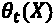，与给定异质效果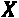的每个处理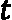相关联。首先，DRL 方法通过应用反向倾向来消除回归模型的偏差，如下所示:
如何准确地从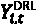估算将取决于所采用的 DRL 变量。我们将使用一个线性变量(LinearDRLearner)，以便它返回系数和截距，这很容易解释。它通过运行普通线性回归 ( OLS )得到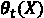用于处理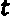和对照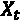之间的结果差异。这在直觉上是有意义的，因为治疗的估计效果减去缺少治疗的估计效果(t = 0)就是所述治疗的净效果。
现在，所有的理论都结束了，让我们开始研究吧！
我们可以通过指定任何 scikit-learn 兼容的回归器(model_regression)和分类器(model_propensity)，从econml库中初始化一个LinearDRLearner，我们称之为drlearner。我们将对两者都使用 XGBoost，但是注意分类器有一个objective=multi:softmax属性。请记住，我们有多种治疗方法，所以这是一个多类分类问题。代码可以在下面的代码片段中看到:
drlearner = LinearDRLearner(\
model_regression=xgb.XGBRegressor(learning_rate=0.1),\
model_propensity=xgb.XGBClassifier(learning_rate=0.1,\
max_depth=2,objective="multi:softmax"),\
random_state=rand)
如果你想了解回归和倾向模型都在做什么，你可以很容易地拟合xgb.XGBRegressor().fit(W.join(X), Y)和xgb.XGBClassifier(objective="multi:softmax").fit(W.join(X), T)模型。我们现在不会这样做，但是如果你有兴趣，你可以评估他们的表现，甚至运行特征重要性方法来了解是什么影响了他们各自的预测。因果模型将它们与 DRL 框架结合在一起，导致不同的结论。
我们可以在drlearner中使用fit，利用econml的 dowhy 包装器来拟合因果模型。第一个属性是Y、T、X和Y组件:熊猫数据帧。可选地，您可以为每个组件提供变量名:每个 pandas 数据帧的列名。最后，我们想估计一下治疗效果。可选地，我们可以提供效果修改器(X)来完成这项工作，我们将使用一半的数据来完成这项工作，如下面的代码片段所示:
causal_mdl = drlearner.dowhy.fit(Y, T, X, W,\
outcome_names=Y.columns.to_list(),\
treatment_names=T.columns.to_list(),\
feature_names=X.columns.to_list(),\
confounder_names=W.columns.to_list(),\
target_units=X.iloc[:550].values)
随着因果模型的初始化，我们可以将它可视化。带有pygraphviz的pydot库可以为我们做这件事。请注意，这个库是出了名的易变，所以它可能会失败，而会用view_model向您显示一个不太吸引人的默认图形。如果发生这种情况，不要担心。看看下面的代码片段:
try: display(Image(to_pydot(causal_mdl._graph._graph).create_png())) except: causal_mdl.view_model()
前面代码片段中的代码输出了这里显示的模型图。有了它，你就能体会到所有变量之间的联系:
图 11.12-因果模型图
因果模型已经拟合好了，我们来检验和解读结果，好吗？
首先，重要的是要注意到econml的 DoWhy 包装器如何通过dowhy.fit方法减少了几个步骤。通常，当你直接用 DoWhy 构建一个CausalModel比如这个时，它有一个名为identify_effect的方法，该方法导出要估计的效果的概率表达式(由标识的估计命令)。在这种情况下，这被称为estimate_effect采用这个表达式和它应该联系在一起的模型(回归和倾向)。有了它们，它为每个结果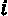和治疗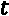计算 ATE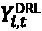和 CATE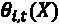。然而，由于我们使用了包装器来fit因果模型，它自动负责识别和估计步骤。
您可以使用identified_estimand_属性访问已识别的 ATE，使用estimate_属性访问因果模型的估计结果。代码可以在下面的代码片段中看到:
identified_ate = causal_mdl.identified_estimand_ print(identified_ate) drlearner_estimate = causal_mdl.estimate_ print(drlearner_estimate)
前面的代码片段中显示的代码输出了identified_estimand_，它是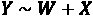 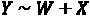的期望值的派生，带有一些假设。然后，因果-"realized" estimate_返回治疗#1 的 ATE，如下面的代码片段所示:
Estimand type: nonparametric-ate
### Estimand : 1
Estimand name: backdoor1 (Default)
Estimand expression:
d
─────────────(Expectation(_LTV|_URBAN,_ppm,_CC_LIMIT,_tpm,_spend,_RETAIL,_PREM
d[_TREATMENT]
IUM,_RURAL))
Estimand assumption 1, Unconfoundedness: If U→{_TREATMENT} and U→_LTV then P(_LTV|_TREATMENT,_URBAN,_ppm,_CC_LIMIT,_tpm,_spend,_RETAIL,_PREMIUM,_RURAL,U) = \
P(_LTV|_TREATMENT,_URBAN,_ppm,_CC_LIMIT,_tpm,_spend,_RETAIL,_PREMIUM,_RURAL)
*** Causal Estimate ***
## Identified estimand
Estimand type: nonparametric-ate
## Realized estimand
b: _LTV~_TREATMENT+_URBAN+_ppm+_CC_LIMIT+_tpm+_spend+_RETAIL+_PREMIUM+_RURAL | _CC_LIMIT
Target units:
## Estimate
Mean value: 7221.414390341943
Effect estimates: [6762.97178458 7330.10299182
7355.87769131 ... 7217.74562572 7492.35375285
7214.96052799]
接下来，我们可以遍历因果模型中的所有处理，并为每个处理返回一个summary，如下所示:
for i in range(causal_mdl._d_t[0]):
print("Treatment: %s" % treatment_names[i])
display(econml_mdl.summary(T=i+1))
图 11.13–其中一种处理的总结
为了更好地理解系数和截距，我们可以用它们各自的置信区间来绘制它们。为此，我们首先创建一个治疗指数(idxs)。有三种治疗方法，所以这只是一个介于 0 和 2 之间的数字数组。然后，使用列表理解将所有系数(coef_)和截距(intercept_)放入一个数组中。然而，对于系数和截距的 90%置信区间来说，情况有点复杂，因为coef[interval[and]{custom-style="P-Code"}intercept]{custom-style="P-Italics"}区间返回这些区间的下限和上限。我们需要两个方向上的误差幅度的长度，而不是边界。我们从这些界限中减去系数和截距，以获得它们各自的误差幅度，如下面的代码片段所示:
idxs = np.arange(0, causal_mdl._d_t[0])
coefs = np.hstack([causal_mdl.coef_(T=i+1) for i in idxs])
intercepts = np.hstack([causal_mdl.intercept_(T=i+1) for i in idxs])
coefs_err = np.hstack([causal_mdl.coef__interval(T=i+1) for i in\
idxs])
coefs_err[0, :] = coefs - coefs_err[0, :]
coefs_err[1, :] = coefs_err[1, :] - coefs
intercepts_err = \
np.vstack([causal_mdl.intercept__interval(T=i+1)\
for i in idxs]).T
intercepts_err[0, :] = intercepts - intercepts_err[0, :]
intercepts_err[1, :] = intercepts_err[1, :] - intercepts
接下来，我们使用errorbar绘制每个处理的系数和各自的误差。我们可以将截取作为另一个子情节，如下面的代码片段所示:
ax1 = plt.subplot(2, 1, 1)
plt.errorbar(idxs, coefs, coefs_err, fmt="o")
plt.xticks(idxs, treatment_names)
plt.setp(ax1.get_xticklabels(), visible=False)
plt.title("Coefficients")
plt.subplot(2, 1, 2)
plt.errorbar(idxs, intercepts, intercepts_err, fmt="o")
plt.xticks(idxs, treatment_names)
plt.title("Intercepts")
上面的代码片段输出了以下内容:
图 11.14-所有处理的系数和截距
通过图 11.14 ，你可以理解所有截距和系数的误差幅度有多大。尽管如此，很明显，单就系数而言，从左到右阅读时，处理保持略微变好。但是在我们断定付款计划&降低信用限额是最佳政策之前，我们必须考虑截距，该截距比第一种处理低。本质上，这意味着具有最低信用卡限额的客户可能通过第一种策略更多地提高终身价值，因为系数乘以限额，而截距是起点。假设没有一个对所有客户都适用的最佳策略，让我们使用因果模型来研究如何为每个客户选择策略。
我们可以使用const_marginal_effect方法在客户的基础上决定信贷政策，该方法采用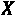效果修改量(_CC_LIMIT)并计算反事实 CATE，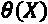。换句话说，它返回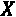中所有观察的所有处理的估计_LTV。
但是，它们的价格不尽相同。建立一个付款计划需要每份合同大约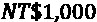的行政和法律成本，根据银行精算部门的说法，降低信用限额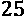的机会成本估计为客户一生中每月平均付款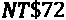(_ppm)。为了考虑这些成本，我们可以建立一个简单的lambda函数，该函数获取所有治疗的支付计划成本，并将它们添加到可变信贷限额成本中，该成本自然会乘以_ppm。给定一个信用卡限制长度为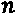的数组，成本函数返回一个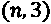维度的数组，其中包含每次治疗的成本。然后，我们获得反事实 CATE 并扣除成本(treatment_effect_minus_costs)。然后，我们扩展数组以包含一列表示“无”治疗的零，并使用argmax返回每个客户的推荐治疗指数(recommended_T，如以下代码片段所示:
cost_fn = lambda X: np.repeat(np.array([[0, 1000, 1000]]),\
X.shape[0], axis=0) +\
(np.repeat(np.array([[72, 0, 72]]), X.shape[0], axis=0) *\
X._ppm.values.reshape(-1,1))
treatment_effect_minus_costs =\
causal_mdl.const_marginal_effect(X=X.values) -\
cost_fn(ccdefault_causal_df)
treatment_effect_minus_costs = np.hstack([np.zeros(X.shape),\
treatment_marginal_effect])
recommended_T = np.argmax(treatment_effect_minus_costs, axis=1)
我们可以将scatterplot_CC_LIMIT和_ppm，按推荐处理进行颜色编码，以观察客户的最优信贷政策，如下所示:
sns.scatterplot(\
x=ccdefault_causal_df['_CC_LIMIT'].values,\
y=ccdefault_causal_df['_ppm'].values,\
hue=all_treatment_names[recommended_T],\
hue_order=all_treatment_names)
plt.title("Optimal Credit Policy by Customer")
plt.xlabel("Original Credit Limit")
plt.ylabel("Payments/month")
上述代码片段输出以下散点图:
图 11.15-客户根据原始信用额度和信用卡使用情况制定的最佳信用政策
在图 11.15 中可以明显看出，从未推荐过任何治疗方法。即使没有扣除成本，这个事实仍然成立——您可以删除cost_fn并重新运行输出图的代码来验证。你可以推断出所有的待遇对顾客都有利，有些比其他的更有利。当然，根据客户的不同，有些待遇对银行的好处要比其他待遇多。这里有一条细线要走。
最大的担忧之一是对客户的公平性，尤其是银行最不公平的客户:弱势群体。仅仅因为一项政策对银行来说比另一项政策成本更高，就应该排除获得其他政策的机会。对此进行评估的一种方法是用百分比堆积条形图显示所有推荐的策略。这样，我们可以观察到推荐的政策是如何在特权群体和弱势群体之间划分的。看看下面的代码片段:
ccdefault_causal_df['recommended_T'] = recommended_T
plot_df =\
ccdefault_causal_df.groupby(['recommended_T','AGE_GROUP']).
size().reset_index()
plot_df['AGE_GROUP'] = plot_df.AGE_GROUP.replace({0:'unprivileged',\
1:'privileged'})
plot_df = plot_df.pivot(columns='AGE_GROUP', index='recommended_T',\
values=0)
plot_df.index = treatment_names
plot_df = plot_df.apply(lambda r: r/r.sum()*100, axis=1)
plot_df.plot.bar(stacked=True, rot=0)
plt.xlabel('Optimal Policy')
plt.ylabel('%')
上述代码片段中的代码输出如下:
图 11.16-最优政策分配的公平性
图 11.16 显示了特权群体如何以更高的比例获得支付计划中的一项政策。这种差异主要是由于银行的成本是一个因素，所以如果银行吸收这些成本，它可以使它更加公平。但是什么是公平的解决方案呢？选择信贷政策是程序公平的一个例子，有许多可能的定义。平等待遇字面意思是同等待遇还是比例待遇？它也包含选择自由的概念吗？如果客户更喜欢一种策略而不是另一种呢？应该允许他们转换吗？无论定义是什么，都可以在因果模型的帮助下解决。我们可以为所有客户分配相同的策略，或者可以调整推荐策略的分布，使比例相等，或者每个客户可以在第一个和第二个最佳策略之间进行选择。有这么多的方法去做这件事！
DoWhy 库提供了四种方法来测试估计因果效应的稳健性，概述如下:
接下来，我们将测试前两者的健壮性。
这个方法最容易实现，用method_name="random_common_cause"调用refute_estimate。这将返回一个您可以打印的摘要。看看下面的代码片段:
ref_random = \ causal_mdl.refute_estimate(method_name="random_common_cause") print(ref_random)
上述代码片段中的代码输出如下:
Refute: Add a Random Common Cause Estimated effect:7221.414390341943 New effect:7546.695920181393
前面的输出告诉我们，一个新的共同原因，或 W 变量，对 ATE 没有相当大的影响。
用这种方法，我们将用噪声代替治疗变量。如果治疗与结果密切相关，这将使平均影响为零。为了实现它，我们还调用了refute_estimate函数，但是使用了placebo_treatment_refuter作为方法。我们还必须指定placebo_type和模拟次数(num_simulations)。我们将使用的安慰剂类型是permute，模拟越多越好，但这也需要更长时间。代码可以在下面的代码片段中看到:
ref_placebo = causal_mdl.refute_estimate(\
method_name="placebo_treatment_refuter",\
placebo_type="permute", num_simulations=20)
print(ref_placebo)
上述代码输出以下内容:
Refute: Use a Placebo Treatment Estimated effect:7221.414390341943 New effect:132.77295305233164 p value:0.43187234564256083
从前面的输出可以看出，新的效果接近于零。然而，假设 p 值大于 0.05，我们不能拒绝确定 ATE 大于零的零假设。这告诉我们，估计的因果效应并不十分稳健。我们可以通过添加相关的混杂因素或使用不同的因果模型来改善它，但实验设计也有我们无法修复的缺陷，例如银行根据风险因素开出的治疗方法有偏差。
本章的任务是双重的，如下所述:
关于第一个目标，我们根据四个公平性指标(SPD、DI、AOD、EOD)，使用偏差缓解方法制作了四个客观上比基础模型更公平的模型，用于比较特权和弱势年龄组。然而，根据 DFBA 的说法，这些模型中只有两个模型在年龄组和性别方面更公平(见图 11.7 )。我们仍然可以通过组合方法来显著提高公平性，然而四个模型中的任何一个都可以提高基本模型。
至于第二个目标，因果推理框架确定，对双方来说，任何一个被测试的政策都比没有政策好。万岁！然而，它产生的估计并没有建立一个单一的胜利。尽管如此，正如预期的那样，推荐的政策会根据客户的信用额度而变化——另一方面，如果我们的目标是最大化银行的盈利能力，我们必须考虑信用卡的平均使用量。盈利能力的问题提出了我们必须调和的两个目标:规定推荐的政策，使客户或银行受益最大。
出于这个原因，如何做到程序公平是一个复杂的问题，有许多可能的答案，任何解决方案都需要世行承担一些与实施政策相关的成本。至于稳健性，尽管实验有缺陷，但我们可以得出结论，我们的估计具有中等水平的稳健性，通过了一个稳健性测试，但没有通过另一个。也就是说，这完全取决于我们认为什么足够强大来验证我们的发现。理想情况下，我们会要求银行开始一个新的无偏见的实验，但再等 6 个月可能不可行。在数据科学中，我们经常发现自己在处理有缺陷的实验和有偏见的数据，并且必须充分利用这些数据。因果推断提供了一种方法，通过解开原因和结果，完成估计和各自的置信区间。然后，我们可以提供带有所有免责声明的调查结果，以便决策者能够做出明智的决策。有偏见的决定会导致有偏见的结果，所以解决偏见的道德责任可以从塑造决策开始。
阅读完本章后，您应该理解如何在数据和模型中通过指标直观地检测偏差，然后通过预处理、处理中和后处理方法减轻偏差。我们还通过估计异质治疗效果，用它们做出公平的政策决定，并测试它们的稳健性，了解了因果推断。在下一章中，我们还将讨论偏见，并学习如何调整模型以满足几个目标，包括公平性。
叶宜中、连志辉(2009)。数据挖掘技术对信用卡客户违约概率预测准确性的比较。专家系统与应用，36(2)，2473-2480。
【https://dl.acm.org/doi/abs/10.1016/j.eswa.2007.12.020 T4】